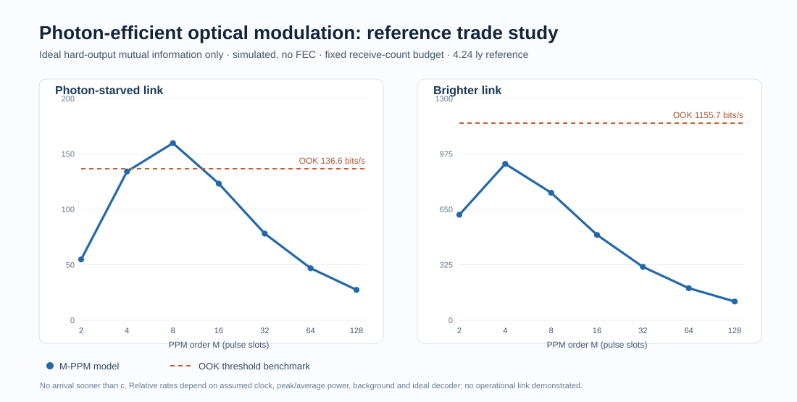
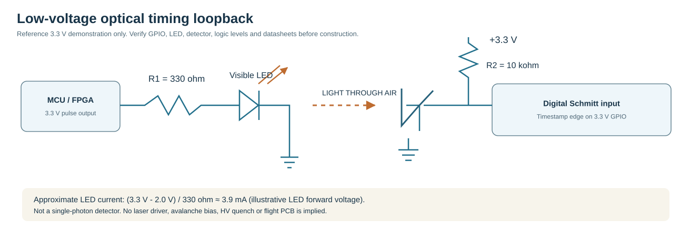

Modulation trade 2026
SHA-256, LF-normalised text
92418f1449fea405114d405eafff57c9324e04d4f9231715051d483434147b62Browse 5 versioned evidence files. Table previews simply display stored rows. Consult the project report for the source, processing steps, and inference assumptions.


92418f1449fea405114d405eafff57c9324e04d4f9231715051d483434147b62e7c8a88f06035e5190d2b61f6b3cc8aff4db3ab06c8648e1f6b779a12367b338004493ce0ab34d9d3acf798710c54cf3477b42e82db0c4b227e0f2d8f25140730adcc053ff94e4ec3bfa927c11d5095666ede11d836edb19e074a1277ca23a8ded7d51812a1b48083a17f1b29debd2da741443cc9c5ee41567e5b055d2aaf024SHA-256 values verify the stored files. They do not independently validate the scientific analysis. Rebuild this page with python scripts/evidence_catalog.py followed by python scripts/render_evidence_page.py.